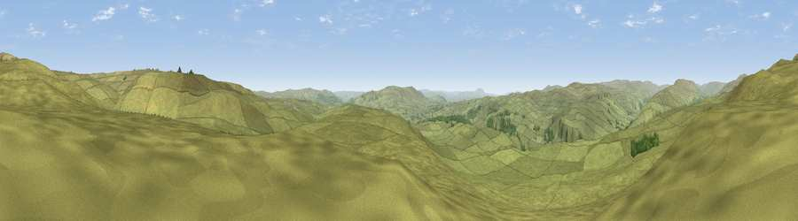

Viewpoint near Conistone
#10743 in England · top 16% of its area beats it · near ConistoneThe view, rendered

A 360° render of this exact spot computed from the terrain model, tree cover and land cover — summer colours, afternoon light, calibrated against photographs of famous viewpoints. Real trees, hedges and buildings will differ in detail.
The panorama
Grey silhouette: terrain skyline in each direction (720 bearings, Earth curvature and refraction included). Dashed green: skyline with trees (+15 m) and buildings (+8 m) as obstacles. Blue strip: how far the ground is visible on each bearing.
Where the view opens
Wedge length = distance to the farthest visible ground on that bearing (vegetation-aware). Rings at 10, 25 and 50 km.
What fills the view
97% grassland · 2% woodland
Angular shares of the visible panorama (visual magnitude), not map area. Landscape diversity 0.06 (0–1 Shannon).
Key numbers
More beautiful places nearby
The staircase of upgrades: each row has a higher view potential than everything closer. Driving times are estimates from straight-line distance, calibrated against real road routing — check an actual route before setting out.
| Place | Direction | Drive | Score |
|---|---|---|---|
| Viewpoint near Conistone | NNW · 0 km | ~1 min | 63.4 |
| Sweet Hill | N · 4 km | ~9 min | 74.7 |
| Viewpoint near Kettlewell | N · 6 km | ~12 min | 75.6 |
| Viewpoint near Kettlewell | N · 7 km | ~15 min | 76.6 |
| Viewpoint near Buckden | NNW · 11 km | ~21 min | 77.3 |
| Viewpoint near East Witton | NE · 21 km | ~35 min | 77.8 |
| Little Ingleborough | W · 26 km | ~42 min | 78.8 |
| Viewpoint near Ingleton | WNW · 27 km | ~43 min | 79.5 |
54.11575, -1.99652 · source: screening · position refined by local search. Computed location — check access rights before visiting.